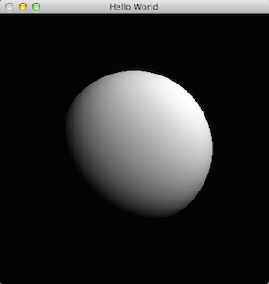
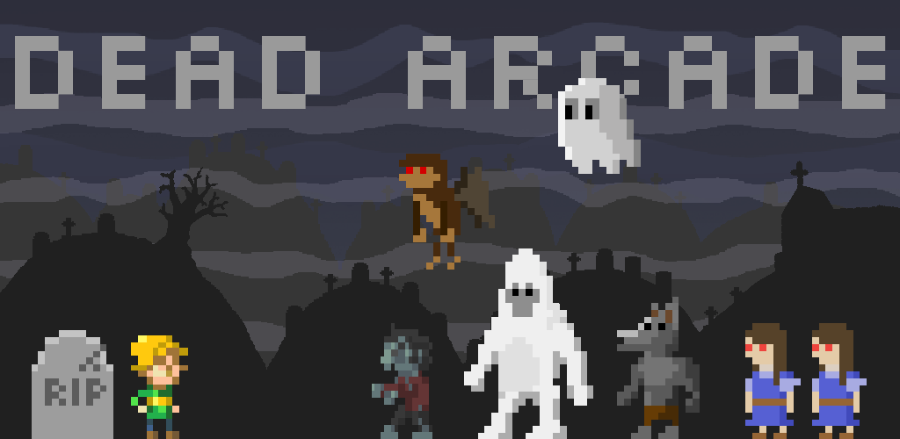
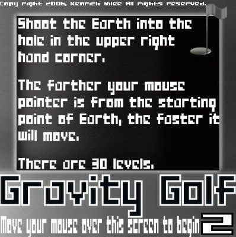
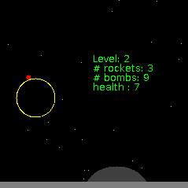
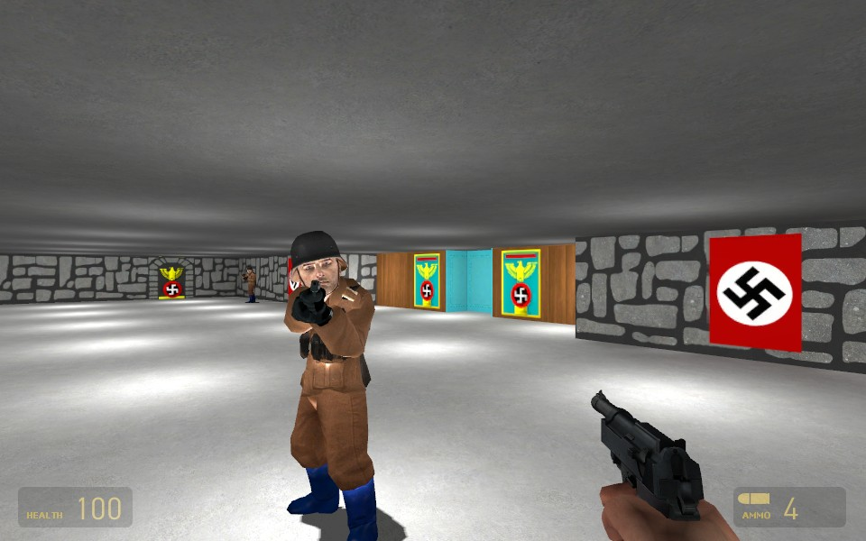

Realtime Hatched Renderer (2014)
This is a renderer I built as a final project for COS 526, a graduate level course on graphics. It renders a scene using soft shadows using variance shadow mapping [Donnelly 2006], hemisphere based screen-space ambient occlusion, and real-time hatching [Praun 2001].
I built the renderer completely from scratch in modern C++: I use RAII to handle OpenGL resources, lambda closures to cleanly setup different shader pipelines, shared_ptr for memory management, etc.

(ssao, real-time hatching, variance shadow maps, diffuse lighting)
Path Tracer (2014)
This is a path tracer I built for COS 526, a graduate level course on graphics. It handles caustics, reflections, refractions, and general indirect lighting. You can see the source-code on GitHub.
Imperfect Shadow Maps (2011)
Fall of 2011, I worked on an algorithm for computing radiosity utilizing imperfect shadow maps inspired by Ritschel 2008. This method involves splatting a point representation of the scene to generate a shadow map. Multiple imperfect shadow maps can be generated in a single rendering pass. In my implementation, however, due to the complexity of the shaders, realtime rendering is not achieved.


(standard shadow maps, imperfect shadow maps)
Rex: Explore the App World (2012-2013)
I co-founded Rex (originally called Mapsaurus) with Danny Guo, Evan Leichter, and Alice Zheng in early 2012. We participated in TigerLabs University Accelerator in summer 2012, raised a small angel round in late 2012, and shut down the company in late 2013. In addition to general project management and investor relations, I worked on our Python backend, Javascript/HTML5 frontend, and owned our Android frontend.
Our goal was to build the easiest way to discover new Android apps. Rex provided personalized app recommendations and a unique, visual interface for exploring related apps. ~60,000 people downloaded our app.
PanesLibrary (2013)
PanesLibrary is an open-source library that makes it ridiculously easy to make native Android apps with flexible multi-pane tablet layouts. On the phone, the app appears as a conventional app with a sliding menu and a content pane where fragments are stacked on top of each other. On the tablet, the menu and all other fragments appear in dynamically added panes of varying sizes.
It's been starred >300 times, forked >100 times, and used in production!
AutoWallpaper (2013)
AutoWallpaper updates the wallpaper of your phone with the top images from Reddit multiple times a day. It's been downloaded >10,000 times.

Rest In Peace (2014)
The ghosts of the dead haunt one dimension and the dead come back to life in the other!
I built RIP in 48 hours for the 30th Ludum Dare competition. It's coded from scratch in Javascript using HTML5 <canvas/>.
You can play it in your browser or checkout the sourcecode on GitHub!

Wolfenstein AI (2012)
For our computer vision final project, Kynan Rilee, Robert Timpe, and I built an AI that plays (and beats) the first level of Wolfenstein 3D. It analyzes the pixels on the screen and spoofs keyboard events to play the game.
My part of the project was figuring out how to localize the player. I used a particle filter that took, as input, randomly sampled depth measurements. These depths were determined by judging the height of the visible wall.
Escape! (2014)
This is a classic stealth game set in a pastel colored world inhabited by Death.
I built Escape over a week for the Insanity Jam competition. It's coded in C# using Unity3D.
Play it here: Unity Web Player, Linux, Windows, Mac

Haskell Ray Tracer (2014)
I built a simple ray-tracer to learn Haskell. I plan to extend the code as I learn more Haskell.

Dead Arcade (2011)
Summer of 2011, Justin Kruskal (coder), Melinda B (artist), and I built Dead Arcade, an Android game based on the original Mario Bros arcade game. The game engine we built relies on an entity/component model and renders with OpenGL.
Until Rex, this was my biggest project. It was the first time I'd worked with another programmer for a significant period of time and the first time I actually polished and published something. Since publishing it late 2011 (polishing it took a lot of time), it's been downloaded 23,000 times.

Facebook Princeton Hackathon (2011)
I built this game from scratch in 24 hours for the Facebook Princeton Hackathon (2nd place!). It's a tower-defense real-time-strategy game. The AI relies mostly on gradient descent and a grid data structure.
Checkout the sourcecode on GitHub.
Zombie Shooter (2011)
For our graphics final project, Kynan Rilee and I built a top-down zombie shooter from scratch in C++ using OpenGL. It includes billiard ball physics, baked lighting, point/spot/directional light, simple object avoidance, boid AI, and more!
2D Java Game Engine (2010-2011)
This game engine was built to be as flexible as possible. Unfortunately, at the time I didn't know much about common design patterns and I had just discovered Java generics.
Still, the game engine was pretty simple and flexible. I was able to build a single-screen Mario Bros platform in just a couple of days and an Asteroids-style shooter in an afternoon. I dropped the project, however, after struggling for a few weeks to build an RTS using the engine.
Checkout the sourcecode on GitHub.
2D Java Games (2005-2009)
In high school and early college, I made a bunch of simple Java games from scratch. These games are how I learned the basics of programming and began to grok principles like modular design, inheritance, thread-safe programming, and more. I consider these games a huge part of my education. It's by suffering through my own over-engineered or poorly designed game that I learned the value of simplicity.



Wolfenstein: Source (2009)
Wolfenstein: Source is a Half Life 2 mod I made in high school. The goal was to convert the classic Wolfenstein 3D video game to the Source engine. I built a Java program that would process Wolfenstein 3D maps and generate Half Life 2 levels. While the first level was playable, I never finished the project.


Yoda Life (2005)
Yoda Life is a Half Life mod I made freshman year of high school. It's Half Life, except every character is Yoda and all the weapons are from Star Wars.
Hackerrank (2012)
A couple years ago, I spent some time working on problems on HackerRank. You can see my profile here.
My favorite challenge was a travelling salesman problem for which I built an iterative ant-colony optimization algorithm. It got 7th place out of 1169 submissions.
FML-style website (2012)
I made an FML-style website for my roommate (and future co-founder) where people could vote on things he did and didn't do. The website was a hit with my friends, garnering dozens of submissions and over 200 votes over the week that I ran it.
Settlers of Catan (2011)
For my COS 333 (Advanced Programming Techniques) final project, I built the front-end for a Settlers of Catan style boardgame in Javascript. I made versions using SVG and Canvas.
{kind=link}
{kind=link}
{kind=link}
{kind=link}